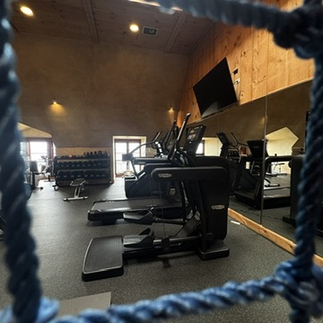
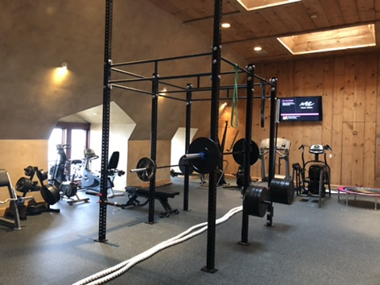

An evolving training room
Cardio, strength, and the room around them.
The gallery includes a cardio arrangement with the SkiErg starting at the left, as well as selected views of strength equipment, dumbbells, kettlebells, and earlier configurations. Because the room changed through the years, the images are grouped as examples of the project—not as a before-and-after timeline.
See the broader approach to residential gym design on Long Island, or discuss a home gym project.
Selected project views



